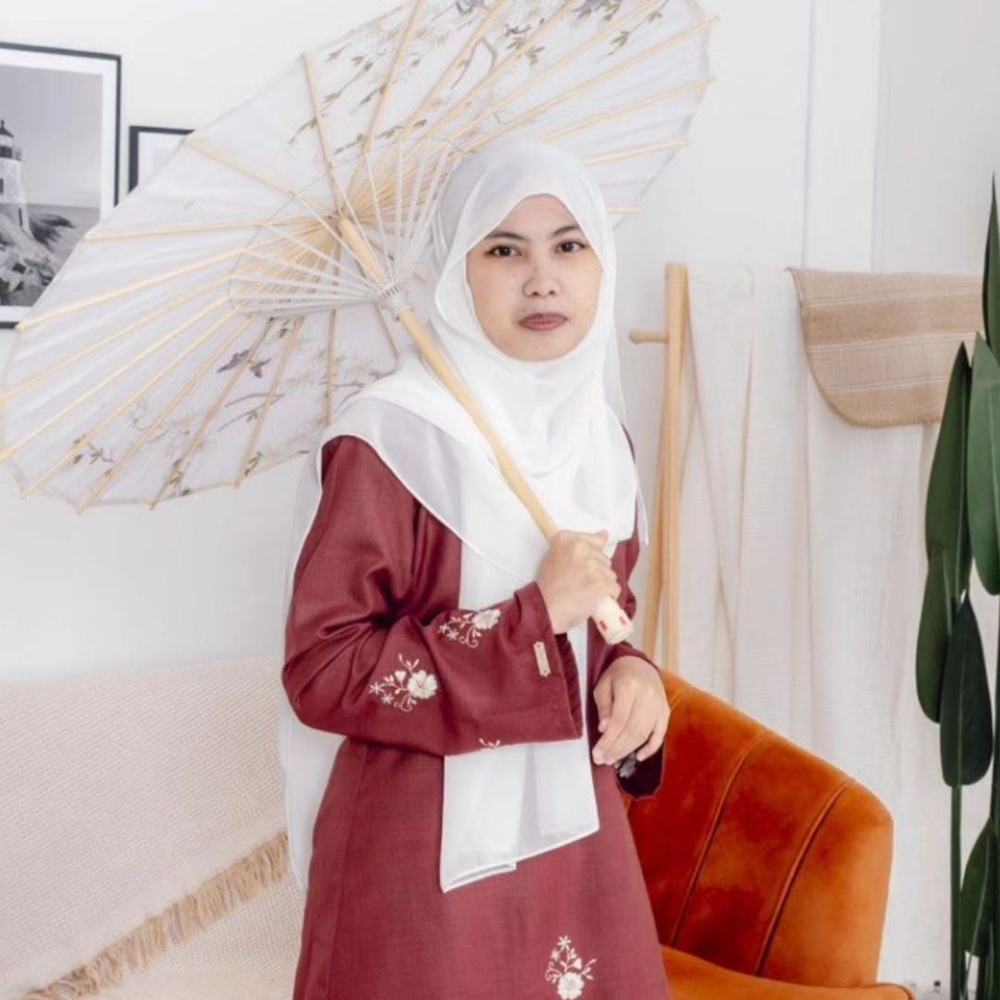
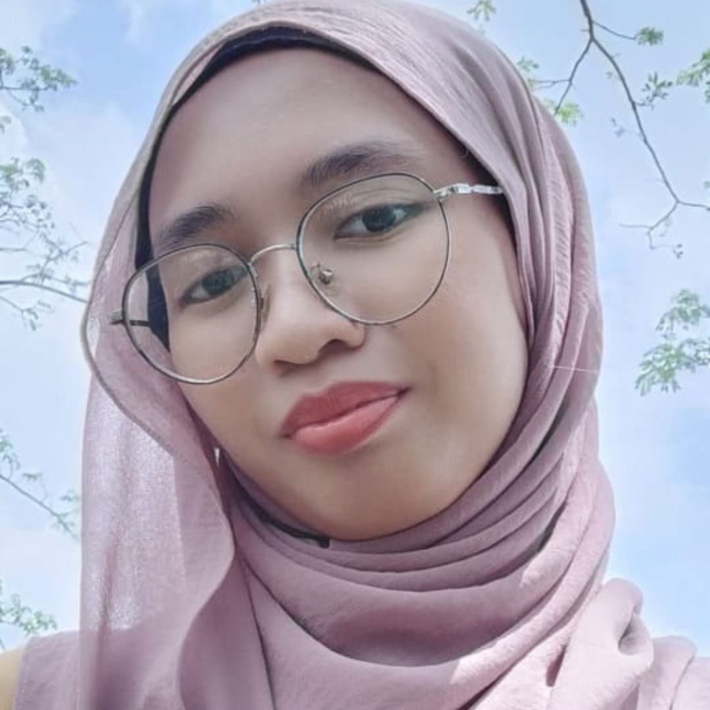
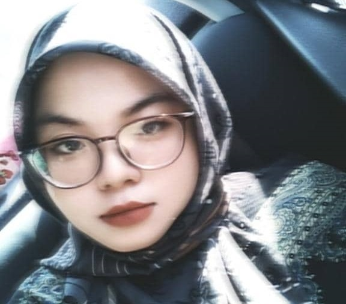

˚ʚ♡ɞ˚MY BESTIES˚ʚ♡ɞ˚

Nur Hanie Syamimie's Biodata
- Name: Nur Hanie Syamimie
- Nickname: Mimi or Mim
- Best Friend Since: High School
- High Schools Attended:
- Current Education: Studying Animation at UiTM Puncak Perdana
- Shared Interests: Anime and Art
- Hobbies:
- Art (Commissions)
- Cosplaying
- Support Her: Follow her on social media to support her art and cosplay!
Mimi Art Instagram
Mimi Cosplay Instagram

Nur Aleeya Safeeya's Biodata
- Name: Nur Aleeya Safeeya Binti Musa
- Nickname: Alee or Aleeya Saf
- Best Friend Since: High School
- High Schools Attended:
- Current Education: Politeknik Ibrahim Sultan, Pasir Gudang, Johor
- Shared Interests: Anime, Art, Cartoon and obsession over cats
- Hobbies:
- Drawing Anime or cartoon characters
- Do a video for Social media
- Followers and subscribers:
- 34.6k subscribers on YouTube
- 59.8k followers on TikTok
- 1,118 followers on Instagram

Nurul Huda Puteri's Biodata
- Name: Nurul Huda Puteri Bt Nuryazid
- Nickname: Huda
- Best Friend Since Primary School (Started at age 7, so currently 14 years)
- Schools Attended:
- Sekolah Agama Bandar Tangkak (SABT)
- Current Education: Melaka International College of Science and Technology (Micost)
- Shared Interests: K-drama and K-pop (watch together virtually with others)
- Hobbies:
- Academic Achievement: Dean's List (last semester)
- Fun Fact: Maintained a friendship for 14 years despite not hanging out in person after primary school due to strict parents. Bonded through video calls, even if it meant just staring at each other for hours.
- Future Promise: Remain close friends forever ("until our last breath and continue it at Jannah, Insyaallah")